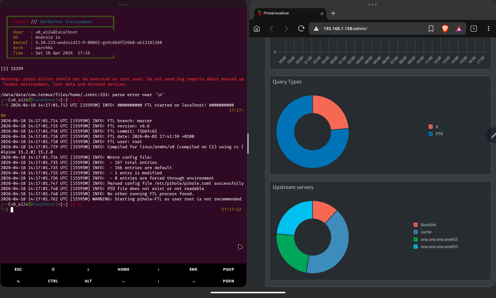
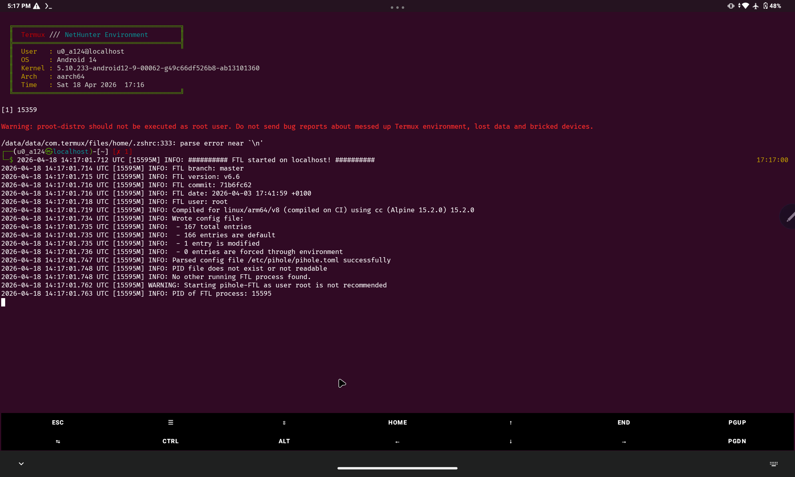
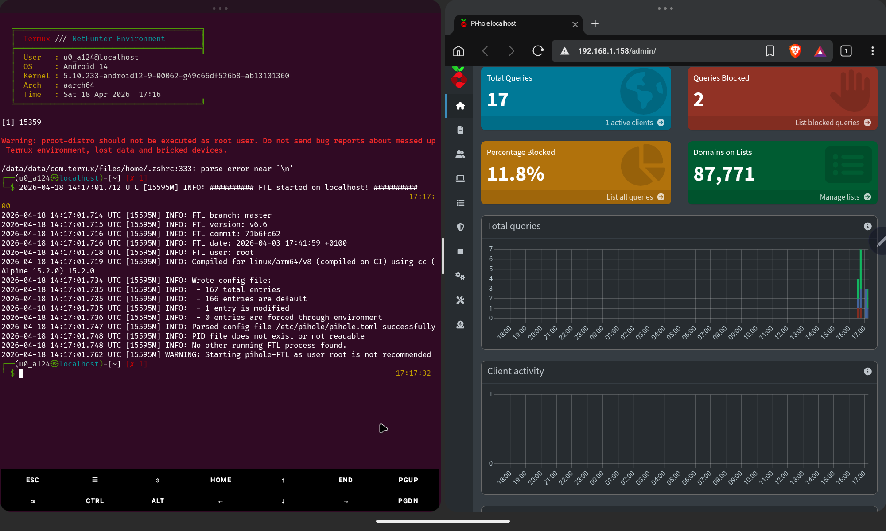

gr4v1ty — Network-Wide Ad Blocking on a $0 Server
How I turned a rooted Android tablet into a Pi-hole DNS server for my entire network — and built an automated tool so you never have to do it the hard way.
The Suffering
Let me paint you a picture. You're trying to watch a tutorial. There's a 30-second unskippable pre-roll ad. Fine, you wait. Then there's a mid-roll. Then a banner ad crawls across the bottom of the screen. Then the page auto-plays a video in the corner. Then a popup asks if you want push notifications. You try to close it and accidentally click the ad instead. You're now on a casino website.
This is the internet in 2026. It's not browsing anymore — it's running a gauntlet. Every page is a minefield of trackers, fingerprinting scripts, retargeting pixels, and 47 different analytics SDKs quietly cataloguing your every scroll. Your phone knows what you dreamed about last night. A server in Virginia knows too.
Browser extensions help. A little. On one device. While you remember to use that browser. Meanwhile your TV, your tablet, your router, your smart bulbs — all phoning home, all serving ads, all completely unprotected. The extension doesn't cover those. Nothing does. Unless you go deeper.
The DNS Layer
Here's the thing most people don't know: ads need DNS to work. Before a tracker can load, before a retargeting script can fire, before a surveillance pixel can phone home — it has to resolve a domain name to an IP address. That's a DNS query. And DNS queries happen at the network level, before any browser even enters the picture.
Pi-hole sits at that exact layer. It acts as your network's DNS server,
and instead of forwarding every query upstream, it checks requests against a blocklist
of 87,000+ known ad, tracker, and malware domains. If it matches — it returns
0.0.0.0. The domain never resolves. The ad server never loads.
Not on your laptop. Not on your TV. Not on your neighbour's phone if they're on your WiFi.
Every device on the network, protected, without touching a single one of them.
The problem? Pi-hole runs on Linux. Officially it wants a Raspberry Pi, a VPS, or a dedicated server. Most people just don't have that lying around.
But I looked at my desk and saw something I did have — a rooted Android tablet collecting dust. And I had a question: how hard could it actually be?
The Android Angle
The device in question: Lenovo Tab P11 Gen 2 (TB350XU). MediaTek Helio G99, Android 14, fully rooted via Magisk with a bootloader I'd already unlocked months ago for NetHunter work. It runs Termux. It runs proot-distro. And through proot-distro, it can run a full Arch Linux environment — kernel courtesy of Android, userspace courtesy of Arch, root courtesy of Magisk.
The key insight: Pi-hole's FTL daemon needs two things that Android normally blocks —
the ability to bind port 53, and access to AF_NETLINK sockets for interface
enumeration. proot's fake root won't cut it. But Magisk's real kernel root will.
Launch proot via su -c and suddenly FTL has everything it needs.
There's one more challenge. Pi-hole's installer is opinionated. It checks for supported
distros, calls systemctl to manage services, and uses apt-get
for packages. Android has none of that. So you need shims — thin wrappers that intercept
those calls and either fake the result or redirect them appropriately.
Systemctl returns success. apt-get maps to pacman. /etc/os-release says
Debian 11. The installer never knows it's on a phone.
FTL Comes Alive
After working through all of it manually — the shims, the config, the port redirects, the Termux:Boot autostart — FTL finally fired up. First boot output:

That line — FTL started on localhost — hit different. This is a DNS server running on a MediaTek chip inside a tablet, blocking ads for an entire network. No Raspberry Pi. No cloud server. No subscription. Just a rooted Android and some duct-tape Linux magic.

The Dashboard
Pi-hole v6 ships its own embedded web server — no lighttpd needed. FTL handles everything. Open a browser on any device on your network, point it at the tablet's IP, and you get the full admin dashboard. Live query logs, blocklist stats, upstream server breakdown — all of it.

That 11.8% block rate is just the start — cold boot, one active client. Once your full network starts routing through it and you layer in additional blocklists, that number climbs fast. On a busy home network you can expect 20–30% of all DNS traffic to be outright blocked garbage that never should have reached your devices.
Introducing gr4v1ty
The manual process worked, but it was brutal. Shimming systemctl, faking the OS identity,
patching pihole.toml, writing the autostart script, wiring up iptables port
redirects — easily an afternoon of work if you know exactly what you're doing.
More if you're figuring it out as you go.
So I automated all of it. gr4v1ty is a single Bash script that takes a fresh rooted Android device with Termux and handles the entire setup end-to-end. One command. Walk away. Come back to a working Pi-hole.
What the Script Does
gr4v1ty handles the full pipeline automatically, in order, with zero manual intervention required after you answer two prompts at the start:
- Root check — Verifies Magisk
suaccess before touching anything - Install deps — proot-distro, curl, wget via pkg
- Select distro — Arch Linux or Debian, your call
- Setup container — Bootstraps the proot environment with correct bind mounts
- Shim systemctl — Intercepts all service management calls, returns success
- Shim apt-get — Maps package commands to pacman (Arch only)
- Fake OS identity —
/etc/os-releasebecomes Debian 11, installer doesn't blink - Run Pi-hole installer — Interactive, with
PIHOLE_SKIP_OS_CHECK=true - Fix pihole.toml — Correct interface, port, and DNS settings patched automatically
- Create startup script —
~/start_pihole.shwith iptables port redirect + FTL launch - Configure shell — Autostart block injected into
.zshrc/.bashrc - Test DNS — Fires a live query to verify blocking is operational
- Print summary — Your IP, your dashboard URL, your admin password, router instructions
Requirements
- Android 10+ — Tested on Android 14, aarch64
- Root via Magisk — Required for port 53 binding and netlink sockets
- Termux from F-Droid — Not the Play Store version, that one is dead
- Internet during setup — For package downloads, obviously
- Termux:API (optional) — Needed for
termux-wake-lock
- Install Termux from F-Droid only — the Play Store version hasn't been updated in years and will fail
- Grant Termux root in Magisk → Superuser before running gr4v1ty
- Disable battery optimization for Termux in Android settings or Pi-hole will get killed
Router Setup
Once gr4v1ty finishes, it prints your device's IP. Take that IP to your router's DHCP settings and set it as the Primary DNS. Give the tablet a static DHCP lease so the IP never changes. Every device on your network — phone, laptop, TV, smart fridge — will now have its DNS routed through Pi-hole without any per-device configuration.
The Result
Your cheap Android tablet — the one you forgot about, the one with a cracked screen bezel you were meaning to recycle — is now a network-level DNS firewall for everything you own. 87,771 domains blackholed. Every ad server, tracker, fingerprinting endpoint, and telemetry beacon on that list hits a dead end before it ever reaches your devices.
No subscription. No cloud dependency. No trust placed in some extension developer's privacy policy. Your network, your rules, your hardware. And if the tablet dies? Flash another one. gr4v1ty runs the same setup in minutes.
The internet is still loud. But at your router, it's a lot quieter now.